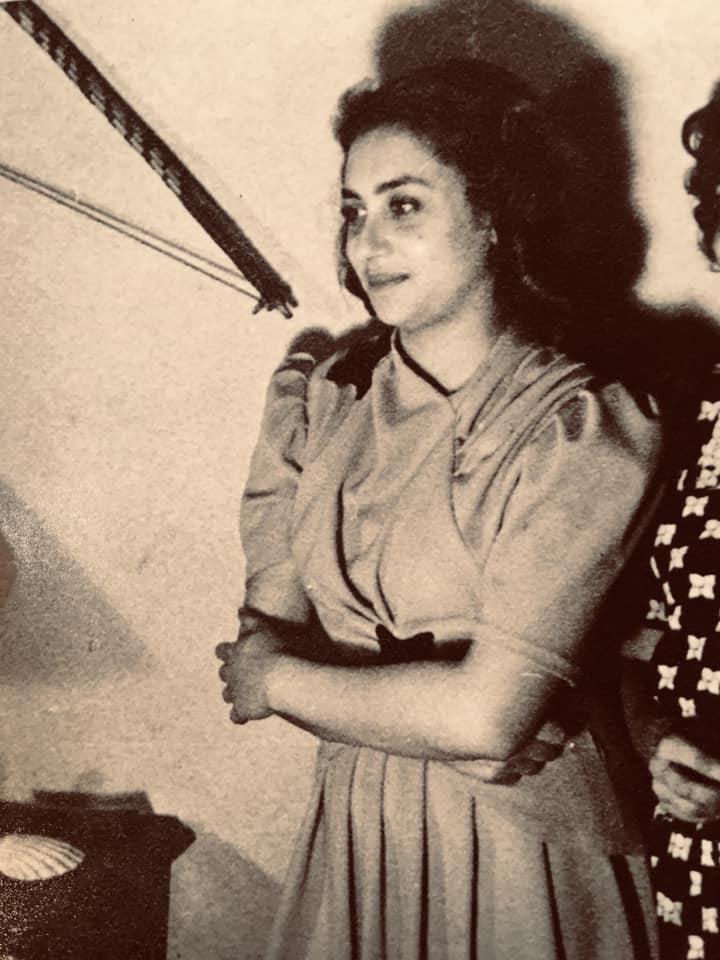

Olga Orozco
Aqui estan tus recuerdos
Aquí están tus recuerdos: este leve polvillo de violetas cayendo inútilmente sobre las olvidadas fechas; tu nombre, el persistente nombre que abandonó tu mano entre las piedras; el árbol familiar, su rumor siempre verde contra el vidrio; mi infancia, tan cercana, en el mismo jardín donde la hierba canta todavía y donde tantas veces tu cabeza reposaba de pronto junto a mí, entre los matorrales de la sombra. Todo siempre es igual. Cuando otra vez llamamos como ahora en el lejano muro: todo siempre es igual. Aquí están tus dominios, pálido adolescente: la húmeda llanura para tus pies furtivos, la aspereza del cardo, la recordada escarcha del amanecer, las antiguas leyendas, la tierra en que nacimos con idéntica niebla sobre el llanto. -¿Recuerdas la nevada? ¡Hace ya tanto tiempo! ¡Cómo han crecido desde entonces tus cabellos! Sin embargo, llevas aún sus efímeras flores sobre el pecho y tu frente se inclina bajo ese mismo cielo tan deslumbrante y claro. ¿Por qué habrás de volver acompañado, como un dios a su mundo, por algún paisaje que he querido? ¿Recuerdas todavía la nevada? ¡Qué sola estará hoy, detrás de las inútiles paredes, tu morada de hierros y de flores! Abandonada, su juventud que tiene la forma de tu cuerpo, extrañará ahora tus silencios demasiado obstinados, tu piel, tan desolada como un país al que sólo visitaran cenicientos pétalos después de haber mirado pasar, ¡tanto tiempo!, la paciencia inacabable de la hormiga entre sus solitarias ruinas. Espera, espera, corazón mío: no es el semblante frío de la temida nieve ni el del sueño reciente. Otra vez, otra vez, corazón mío: el roce inconfundible de la arena en la verja, el grito de la abuela, la misma soledad, la no mentida, y este largo destino de mirarse las manos hasta envejecer.
El retoque final
Es este aquel que amabas. A este rostro falaz que burla su modelo en la leyenda, a estos ojos innobles que miden la ventaja de haber volcado a ciegas tu destino, a estas manos mezquinas que apuestan a pura tierra su ganancia, consagraste los años del pesar y de la espera. Ésta es la imagen real que provocó los bellos espejismos de la ausencia: corredores sedosos encandilados por la repetición del eco, por las sucesivas efigies del error; desvanes hasta el cielo, subsuelos hacia el recuperado paraíso, cuartos a la deriva, cuartos como de plumas y diamante en los que te probabas cada noche los soles y las lluvias de tu siempre jamás, mientras él sonreía, extrañamente inmóvil, absorto en el abrazo de la perduración. Él estaba en lo alto de cualquier escalera, él salía por todas las ventanas para el vuelo nupcial, él te llamaba por tu verdadero nombre. Construcciones en vilo, sostenidas apenas por el temblor de un beso en la memoria, por esas vibraciones con que vuelve un adiós; cárceles de la dicha, cárceles insensatas que el mismo Piranesi envidiaría. Basta un soplo de arena, un encuentro de lazos desatados, una palabra fría como la lija y la sospecha, y esa urdimbre de lámpara y vapor se desmorona con un crujido de alas, se disuelve como templo de miel, como pirámide de nieve. Dulzuras para moscas, ruinas para el enjambre de la profanación. Querrías incendiar los fantasiosos depósitos de ayer, romper las maquinarias con que fraguó el recuerdo las trampas para hoy, el inútil y pérfido disfraz para mañana. O querrías más bien no haber mirado nunca el alevoso rostro, no haber visto jamás al que no fue. Porque sabes que al final de los últimos fulgores, de las últimas nieblas, habrá de desplegarse, voraz como una plaga, otra vez todavía, la inevitable cinta de toda tu existencia. Él pasará otra vez en esa ráfaga de veloces visiones, de días migratorios; él, con su rostro de antaño, con tu historia inconclusa, con el amor saqueado bajo la insoportable piel de la mentira, bajo esta quemadura.
Para este dia
Para este día Reconozco esta hora. Es esa que solía llegar enmascarada entre los pliegues de otras horas; la que de pronto comenzaba a surgir como un oscuro arcángel detrás de la neblina haciendo retroceder mis bosques encantados, mis rituales de amor, mi fiesta en la indolencia, con sólo trazar un signo en el silencio, con sólo cortar el aire con su mano. Esa, la de mirada como un vuelo de cuervo y pasos fantasmales, que venía de lejos con su manto de viaje y las mejillas escarchadas, y se iba bajando la cabeza, de nuevo hasta tan lejos que yo buscaba en vano la huella del carruaje en el pasado. Hora desencarnada, color de amnesia como dibujada en el vacío del azogue, igual que una traslúcida figura enviada desde un retablo del olvido. ¿Y era su propio heraldo, el fondo que se asoma hasta la superficie de la copa, la anunciación de dar a luz las sombras? No supe descifrar su profecía, ese susurro de aguas estancadas que destilan a veces los crepúsculos, ni logré comprender el torbellino de plumas grises con que me aspiraba desde un claro de ayer hasta un vago anfiteatro iluminado por lluvias y por lunas, allá, entre los ventisqueros del irreconocible porvenir; aquí, donde ahora se instala, maciza como el demonio del advenimiento, en su sitial de honor en medio de la asamblea de otras horas, pálidas, transparentes, y me dice que mis bosques son luces extinguidas y aves embalsamadas, que mi amor era erróneo, como un espejo que se contempla en otro espejo, que mi fiesta es un cielo replegado en el sudario de mis muertos. Y se queda esta vez, sin bajar la cabeza.